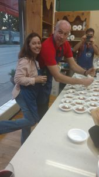
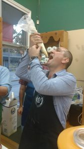
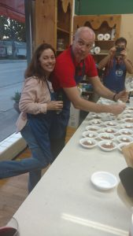
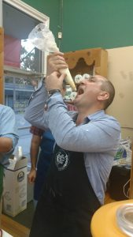

ME and…. Program Manager – Office of Naval Research Director – Advanced Distributed Learning Initiative

We meet Generals and Colonels from around the world – evangelizing the absolute need for our militaries to understand and support the need to share resources for training our great men and women in the military. We must capitalize on their free time – wherever they are to ensure the most ready global force we can. We want our troops as safe as we can make them and having the best training and education we can provide is imperative. It is SO exciting to at least one part of the larger solution to a more peaceful globe. We all wonder – will what I’m doing ever matter to anyone? Maybe, maybe not but one thing is for sure – We’re trying!!!
And yes….more fun, more food, more “collaboration”!!
International ‘collaborators’ watching CHESS!


        
       
  
   
 